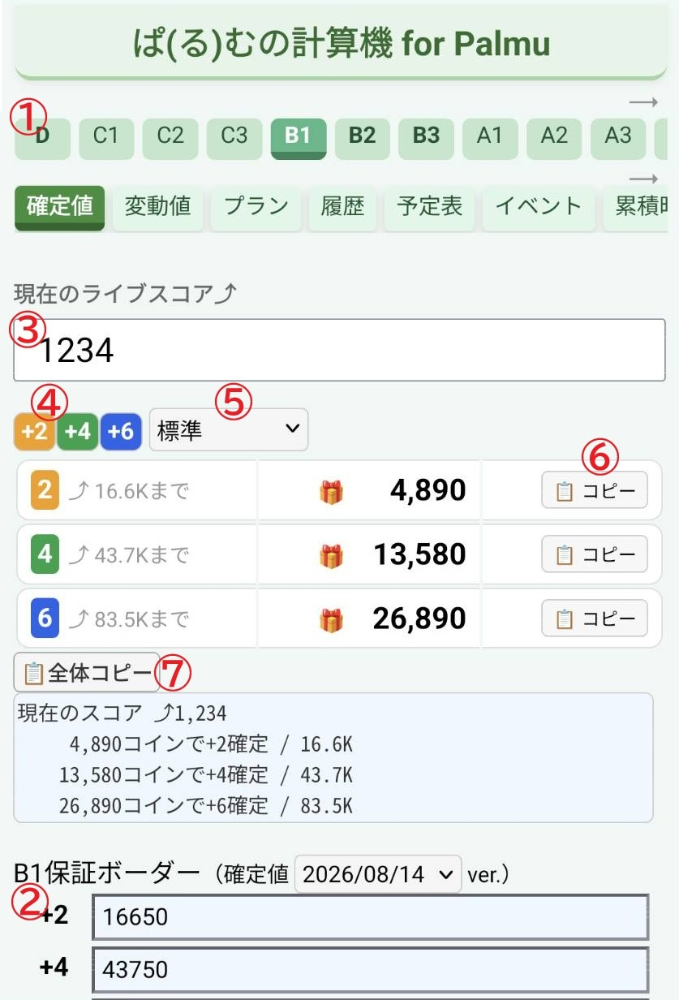

表示する結果 (+2/+4/+6) を選択してください
| +4 ⤴259K まで | 🎁89,950 | |
|---|---|---|
| +6 ⤴478K まで | 🎁172,090 |
ランクを選択してライブスコアを入力するだけで，確定値までの残コイン数を計算するツールを作りました．
— (る) (@ru_palmu) October 18, 2025
高ランク帯で3倍に跳ねない問題にも対応
他の機能：
- ランキキープ・ランクアップのプラン比較
- デイリーポイント獲得の予定表
- 確定値の履歴確認
https://t.co/FGoNVhMqRR #palmu pic.twitter.com/7XVXLGMXuF
ライバーの場合はサブ端末で利用することをおすすめします． もしくは，リスナーに協力してもらって，チャット欄に残コイン数を入力してもらうのが良いと思います．

- 最初に一番上のタブから，ランクを選択してください．
- +2/+4/+6 の保証ボーダーが正しいことを確認してください．正しくなければ修正してください．
- 現在のライブスコアを入力してください．保証ボーダーまでに必要なコイン数が計算されます．
- +4だけ等, 特定のポイントのみが必要な場合は，表示を変更してください．
- 手順 5 以降は，チャットや一言コメントに貼り付ける場合の手順です．
コピー形式を選択してください．コピー形式は，各行・全体のコピーに共通して適用されます．- 「標準」は，本ツールに慣れていない人でも理解しやすい形式です．
- 「シンプル」は，最小限の情報で，必要なコイン数を簡潔に伝えられる形式です．
- 「一言コメ」は，15文字以内でライブスコアと必要なコイン数のみになります．「一言コメント」に貼り付けることを想定しています．
- +2 だけ，+4 だけのような特定のポイントに対するコイン数情報のみをコピーしたい場合は，ここのコピーボタンを利用してください．
- すべてのポイントの情報をコピーしたい場合は，ここのコピーボタンを利用してください．
ライブスコアからコイン数の算出は，コメント数や視聴人数などの影響により若干の誤差が生じます．参考値としてご利用ください． 算出モデルの詳細は、コイン数算出の前提条件をご覧ください．
注意事項 ご参考- 【たいむず（2024/10）】ライブスコアの導入 6. ライブスコアの算出ロジックについて (2024/09/24)